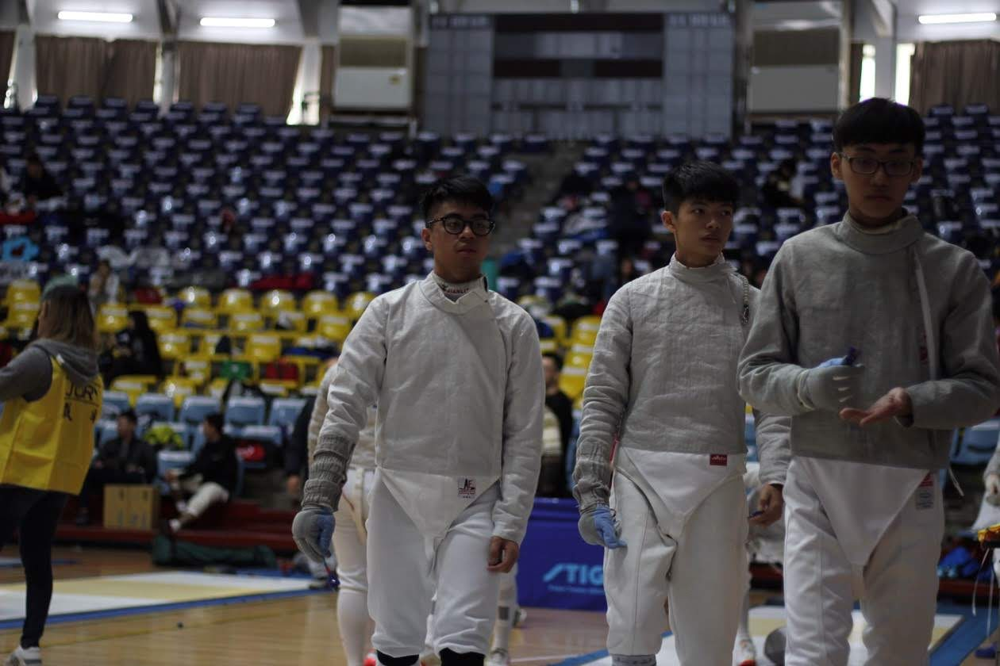

My name is Huang Guang Che. Currently studying in the second year of Information Management Department of Tamkang University Family background: There are four members in the family. His father works in the information industry, his mother is a full-time housekeeper, and his younger sister is studying in middle school. Personality, expertise and interests: I have an easy-going personality and good affinity. My attitude is problem-oriented, I find and solve problems, try to overcome all difficulties and achieve goals. His static interests are watching movies and video games, and his dynamic interests are basketball and running. I usually watch movies to improve my English listening, and sometimes try to translate English subtitles. Club experience: Serving as the equipment chief of the Fencing Club, responsible for managing all the fencing equipment in the entire club, so that members can have the best equipment support when they practice or participate in competitions. During the time as a member of the club, he passed the qualification of the service team of Tamkang University and participated in the service team of the Western Sword Club. He promoted fencing in small schools in various countries and taught children fencing skills in rural elementary schools to accompany them to spend a happy and fulfilling summer vacation. And winter vacation life. During his time in the club, he participated in the Fuda Fencing Invitational Tournament and won the champion of the Soochow University Fencing Freshman Invitational Tournament. Future prospects: I reviewed everything I did, whether it was club experience or work experience, sometimes because of interest, sometimes to see the outside world, like a company, how did they go How does it feel to recruit customers, do business, and how do they persuade people to come to our company... etc. The accumulation of work-study experience is one of my plans for my college career. No matter what kind of work-study job, I believe it can help me understand and understand the depth or breadth of the workplace. I hope you can see my serious and responsible work attitude! 